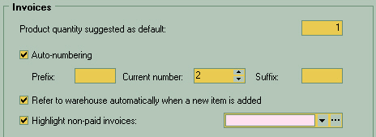

At the top of the window there is a field with default quantity of goods to be entered into goods receipt slips, suggested by the system.
Then you may check "Auto-numbering" in case you wish ID numbers to be automatically assigned to your goods receipt slips.
For better traceability and to help users quickly identify this kind of documents, you may specify a prefix and/or suffix for your goods receipt slips. You may enter them into "prefix" or "suffix" fields. For example, you may enter "INVC" prefix here. Current ID number of the document is entered in the "Current number" field. Next document will be assigned a sequence number starting from the current number.
Refer to warehouse... - By clicking the Add button to add new item into the documents it brings up the warehouse content form instead of position editing form
|